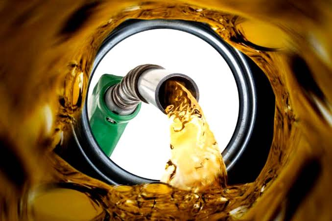
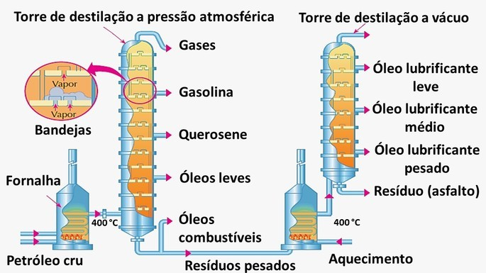
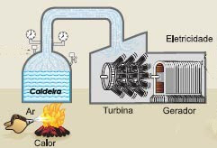
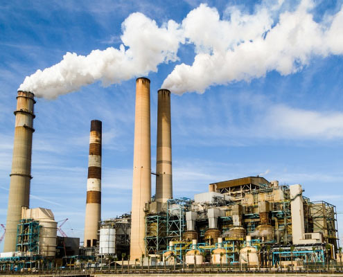

Gabriel Vitor Teixeira Santos - 3° JC
Gabriel Vitor - 3° JC
Seja muito, bem vindo(a) ao meu trabalho avaliativo de Química. Por meio desta simples apresentação, irei responder um total de 5 (cinco) simples perguntas com foco no Petróleo!
Quais são os principais derivados do Petróleo?
- Gasolina automotiva
 - Combustível de aviação

- Óleos combustíveis

- Óleo diesel

- Gás liquefeito de petróleo (gás de cozinha)

- Óleos lubrificantes diversos

- Querosene
- Plásticos
- Asfalto
- Lubrificantes industriais

Como ocorre o fracionamento do Petróleo?
O petróleo, após ser extraído da natureza, é transportado para as refinarias e começa a ser fracionado através de aquecimento em tanques apropriados dando origem a vários subprodutos, esse processo é denominado de destilação fracionada!
Como ocorre a geração de energia através do Petróleo?
Os combustíveis são queimados em caldeiras, turbinas e motores de combustão interna, e assim a energia é gerada.
A energia do petróleo não é um tipo de energia renovável, e é uma fonte poluente, já que passa por um processo de queima para produzir energia. Apesar dos fatores negativos, o petróleo é uma fonte de energia essencial para a manutenção da sociedade, é utilizado também como matéria-prima, para a fabricação de plásticos, borrachas sintéticas, tintas, solventes, produtos cosméticos, entre outros.
Como fica a ordem crescente de temperatura de ebulição das frações do Petróleo?
As frações são divididas de acordo com o ponto de ebulição. Na parte de cima da torre, ficam as frações com o menor ponto de ebulição; na parte inferior, estão as frações com maior ponto de ebulição. a ordem de separação dos componentes na destilação fracionada do menor ao maior ponto de ebulição é: butano, gasolina e querosene.

Calculo do Volume de Gás Butano à 127°C e 5atm, para uma masse de 14Kg.
Dados:
PV=NRT
Massa do Butano= 58g
14Kg = 14.000g
14000g = 241,4 mols de Butano
Cálculos:
5V = 241,4 * 0,082 * 400
5V = 7.918
V = 1.583,6
Espero que tenha gostado da apresentação, e que a minha dedicação tenha trago resultados! Obrigado pela atenção de todos que compareceram aqui.